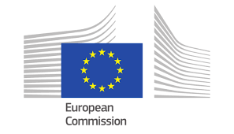
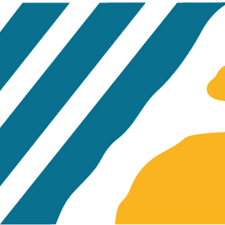
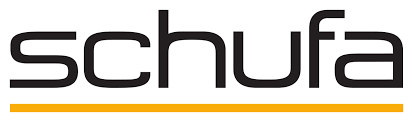
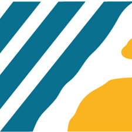
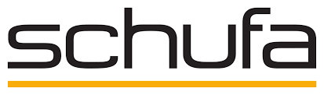
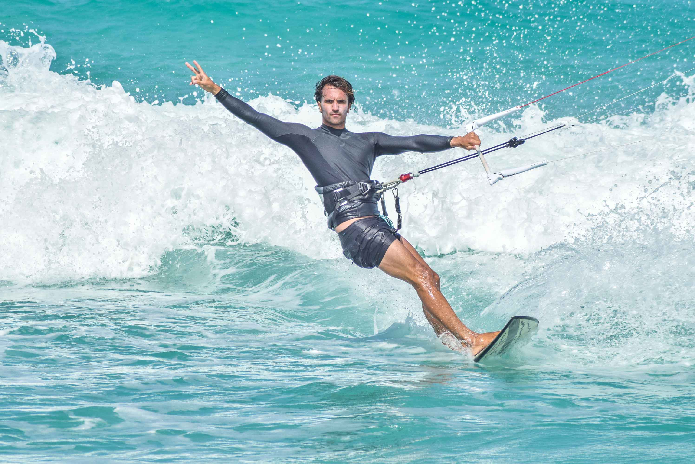
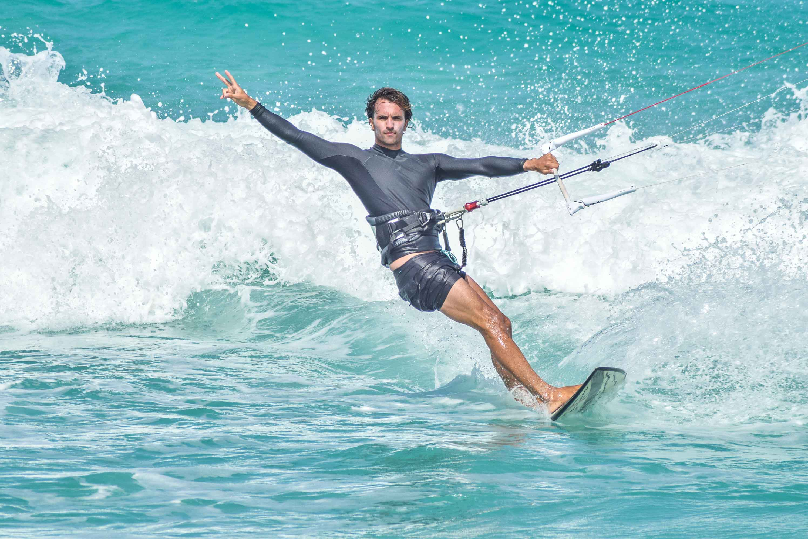

about/
Hi, I'm Carlos Mougan! :)
I am a Principal Investigator and an Applied Skills Support Advisor at the Alan Turing Institute. With a focus on research and industry collaboration, I contribute to the development and implementation of cutting-edge projects between academia and industry. Check our NeurIPS'23 Paper How to Data in Datathons.
I have worked around the different steps of the ML pipeline: data collection, data quality, preprocessing, modeling, and monitoring. At the moment, I research on model monitoring and AI alignment.
Before, I was a Marie Sklodowska-Curie research fellow , a statistician at the European Central Bank  , a consultant at Deloitte , an
industry researcher at , Barcelona Supercomputing Center
, a consultant at Deloitte , an
industry researcher at , Barcelona Supercomputing Center  , IIIA-CSIC , Schufa , and a professional swimmer.
, IIIA-CSIC , Schufa , and a professional swimmer.
Since 2017, I have won numerous data science competitions (see later), ranked Top 2 of 2020 in DataScienceStackExchange, contributed to large-open source Python packages category encoders and developed my own skshift
research/
How to Data in Datathons
Carlos Mougan, Richard Plant, Clare Teng, Marya Bazzi, Alvaro Cabregas Ejea, Ryan Sze-Yin Chan, David Salvador Jasin, Martin Stoffel, Kirstie Jane Whitaker, Jules Manser
Advances in Neural Information Processing Systems, 2023
Monitoring Model Deterioration with Explainable Uncertainty Estimation via Non-parametric Bootstrap
Carlos Mougan, Dan Saattrup Nielsen
AAAI Conference on Artificial Intelligence, 2023
Fairness Implications of Encoding Protected Categorical Attributes
Carlos Mougan, Jose Alvarez, Salvatore Ruggieri, Steffen Staab
Proceedings of the 2023 AAAI/ACM Conference on AI, Ethics, and Society, Association for Computing Machinery, Montreal, Canada, 2023, pp. 956–966
Beyond Demographic Parity: Redefining Equal Treatment
Carlos Mougan, Laura State, Antonio Ferrara, Salvatore Ruggieri, Steffen Staab
First Workshop on AI meets Moral Philosophy and Moral Psychology. Neural Information Processing Systems, 2023
Quantile Encoder: Tackling High Cardinality Categorical Features in Regression Problems
Carlos Mougan, David Masip, Jordi Nin, Oriol Pujol
Modeling Decisions for Artificial Intelligence, Springer International Publishing, 2021, pp. 168-180
Desiderata for Explainable AI in Statistical Production Systems of the European Central Bank
Carlos Mougan, Georgios Kanellos, Thomas Gottron
Machine Learning and Principles and Practice of Knowledge Discovery in Databases - International Workshops of ECML PKDD 2021
The Role of Large Language Models in the Recognition of Territorial Sovereignty: An Analysis of the Construction of Legitimacy
Francisco Castillo-Eslava, Carlos Mougan, Alejandro Romero-Reche, Steffen Staab
European Workshop of Algorithmic Fairness, 2023
Talks & Presentations
Beyond Demographic Parity: Redefining Equal Treatment
January 2024
How To Data in Datathons
December 2023
Necessity of Processing Sensitive Data
December 2023
Fairness Implications of Encoding Protected Attributes
September 2023
Fairness Implications of Encoding Protected Attributes
August 2023
Explanation Shift
June 2023
Monitoring Model Deterioration with Explainable Uncertainty Estimation via Non-Parametric Bootstrap
Jan 2023
Desiderata for Explainable AI at the European Central Bank
March 2022
Desiderata for Explainable AI at the European Central Bank
Jan 2022
Other Relevant Information
Top 2 user in 2020 and top 20 all time Stack Exchange Profile
Main contributor of category encoders, Main developer of skshift and explanationspace
1st BCG Gamma Datathon, 1st at Novartis 2021, 3rd Accenture Health Datathon, 2nd at SpainML Telco-churn and Bronze Medal at Kaggle IEEE-CIS Fraud Detection.
Some Pictures

 
